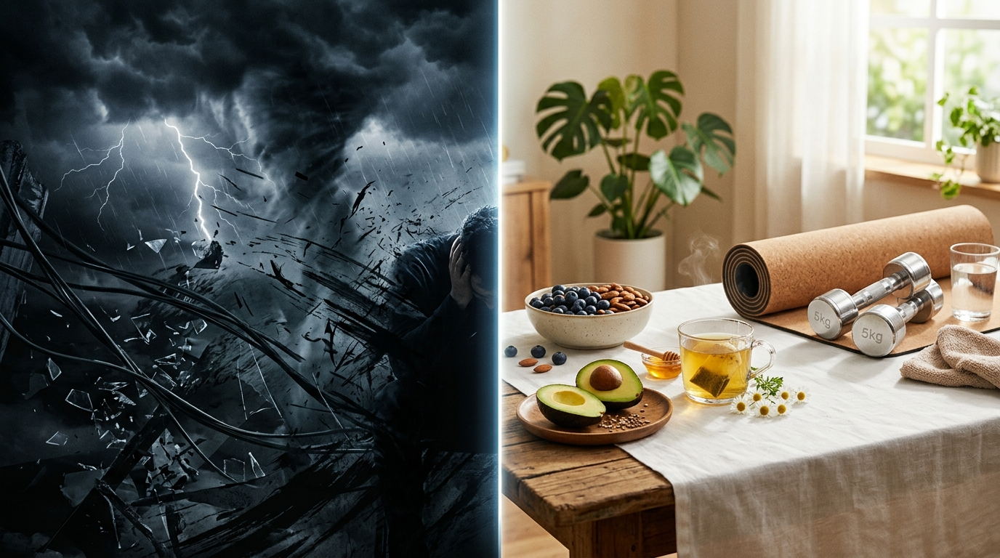

Welcome to CalmStudio Desk. Let's run your studio calmly.

Thank you for your purchase. You'll be looking at your dashboard in about a minute. There's no account, no subscription, no bank connection and nothing to install.
On your computer
Unzip the download, then move CalmStudio Desk.html somewhere it will stay, such as Documents. Don't open it from inside the zip.
Double-click it. It opens in your web browser.
Bookmark it so it's one click away.
On your phone or tablet
Open your private link (below) in Safari (iPhone/iPad) or Chrome (Android).
iPhone: Share → Add to Home Screen. Android: ⋮ → Install app.
CalmStudio Desk now opens like an app and works offline.
Your private link
{{LINK}}
Even on the link, your numbers are saved only on your own device. Nothing is uploaded. Please don't share the link; it's part of your personal licence.
Your first minute
Settings: add your business name, pick your currency first (it locks once money records exist) and set your tax reserve rate.
Clients → Projects: add a client, then a project with a budget and due date. Add tasks right on the project card.
Time: pick a project and press Start timer. Stop and save logs the hours to that project.
Invoices: create one, then press Payment to record full or partial payments. Overdue ones are flagged for you.
Tax reserve: log expenses by category and watch the reserve estimate update.
Just exploring? Settings → Open sample workspace. The sample never touches your own data.
The one rule: your data lives in your browser
CalmStudio Desk saves automatically, privately, on this device only. So use the same browser each time and export a backup weekly (Settings → Export backup, or the Export button in the top bar). iPhone: Safari can clear website data you haven't opened for about a week, and private tabs erase everything when closed. Adding CalmStudio Desk to your Home Screen and backing up weekly keeps your records safe.
CalmStudio Desk — Freelance Business DashboardPage 1 of 2
Good to know
What's inside
Studio at a glance: collected, outstanding, tax reserve, net cash, 6-month cash trend, studio pulse rings, next tasks, upcoming events, active projects
Calendar: month view with tasks, events and invoice due dates. Tap any day to add a task or event
To-dos: open, overdue, today, done; priorities and repeating tasks
Projects: client, budget, due date, status, cover image, progress and tasks
Clients: Lead, Active and Past with notes
Invoices: full and partial payments, overdue flags, charts, print or save as PDF
Events: meetings, calls, deadlines, personal blocks, repeating
Chrome, Safari, Edge and Firefox on Mac, Windows, Chromebook, iPhone, iPad and Android.
Troubleshooting
"My records are gone!"
You probably opened CalmStudio Desk in a different browser or moved the file. Open it the way you did before, or restore your latest backup.
New phone or computer?
Old device: Settings → Export backup. New device: open CalmStudio Desk → Settings → Restore backup and pick that file. There is no automatic sync; that's what keeps your data private.
How do I save an invoice as PDF?
Invoices → the ⎙ print button → choose "Save as PDF" as the printer.
Can I change the look?
Use the palette menu and the Light/Dark button in the top bar, any time.
Showing your screen?
Settings → Toggle privacy blur hides amounts.
Updates
New versions appear in your Etsy purchases. Before switching, export a backup from your current copy, then restore it in the new one.
Not professional advice. CalmStudio Desk is a business planning tool. Tax reserve figures and invoice totals are estimates based on the numbers you enter. It is not financial, legal or tax advice, does not connect to any bank or accounting software, and does not move money.
Thank you
Thank you for choosing CalmStudio Desk. We hope it gives your freelance business a little more calm and clarity. If it has helped you, an honest review on Etsy helps other freelancers find it, and it means the world to a small studio like ours.